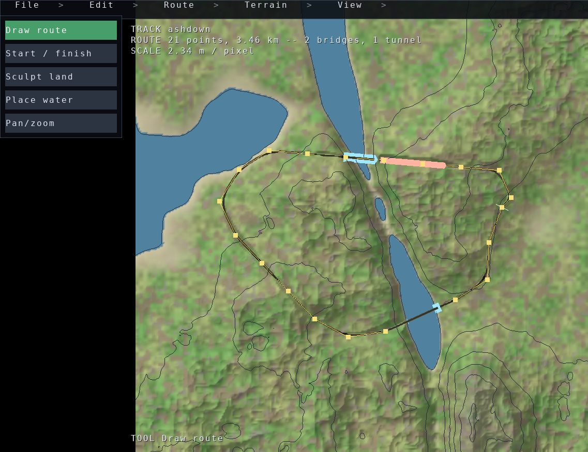

Draw a circuit on a landscape, watch the road settle onto the ground under it, and bake a world the game streams and drives. It is the worked example for Building an editor — the tool modes, the plan view, the surface picking and the handles are engine features, and what is here is a track editor built out of them.

pip install glisteel-editor
glisteel-editor # a fresh landscape to draw on
glisteel-editor --terrain canyon # a different landscape to start from
glisteel-editor --dem N47E008.hgt --centre 47.5,8.5 --datum 0 # real groundThe window is a map: the landscape from straight above, orthographic, so a metre is the same number of pixels wherever it is and the line drawn on it is the line the world gets. Click the ground to put a point down, and again, until the circuit closes. p looks at what you have from an angle, and again goes back. File → Bake a world writes it out; File → Drive it puts you in the car.
A strip down the left says what the pointer is for — drawing the route, saying where a lap begins, sculpting the land, putting a spring down, or panning. Whatever the tool in force does not want still moves the map, so a right drag pans and the wheel zooms. ctrl-z takes back what the tool in force last did: the tools edit different things, and one history over all of them would take back whichever change happened to come last.
A route is a plan — points in world metres, in the order they were drawn, with no heights in them. Where the road actually runs is what the road generator makes of the ground under that line: smoothed, held to a maximum grade, its corners rounded off for the speed it is meant to be driven at, and lifted onto a causeway where it would otherwise run below the waterline. Raise ground under the line and the road climbs it on the next settle.
Sculpting works the same way round. A stroke carries fractal detail as a share of its lift, so a raised hill reads as land rather than as a bubble, and the strokes are part of the landscape rather than of the road: they are saved with the project, and they are what the road settles onto.
Rivers are not saved either. The project records where water wells up, and the courses are worked out from those springs and the land — a bed written down would be the river as the land used to be, and would stay there when the land moved.
The plan view draws the ground two ways at once, because either alone leaves the designer guessing. Shaded relief puts a fixed low sun on the ground's own slope, so a ridge and a valley are different colours rather than the same green; the land is steepened before it is lit, because country a road can be built through is gentle and shading it honestly gives a flat sheet, and the ground is still drawn at the height it really is. Contours say by how much, at 10, 25, 50 or 100 metres — of the landscape rather than of the baked ground, so a road's earthworks do not redraw the map being measured against.
p swaps to a three-quarter view of the same scene, instantly and with nothing rebuilt, starting where the map was looking. The map is what a line is drawn on; this is what the land is judged on.
Not the world. The world is baked, is large, and is thrown away and made again whenever a decision changes. A project is the handful of decisions that produced it — which landscape, and what line was drawn across it — as JSON a designer can read: a base the ground comes from and an ordered stack of edits on top of it, the springs, and the routes.
File → Bake a world writes a
3D Tiles world beside the project file, through the
octree baker. The circuit goes into the tileset's
extras along with it, which is how the game finds the track in what it
streams: the starting grid, the lap timing and the autopilot all read it from
there. glisteel-bake is the same thing from a shell, and with no
arguments it bakes the shipped circuit world.
glisteel-bake --output /tmp/world
glisteel /tmp/world/tileset.jsonThe editor is its own distribution and repository,
github.com/mcfletch/glisteel-editor,
and it is deliberately thin: the landscape, the road generation and the baker belong to
OpenGLContext-editor and to the engine, and the editor's
README.md is the reference for its own tools and file format.